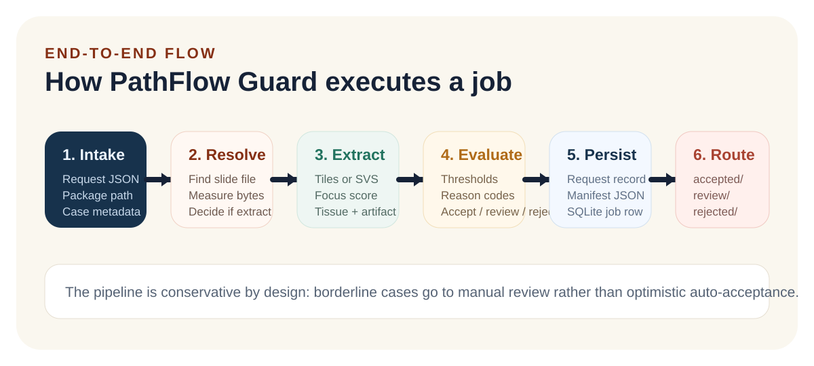
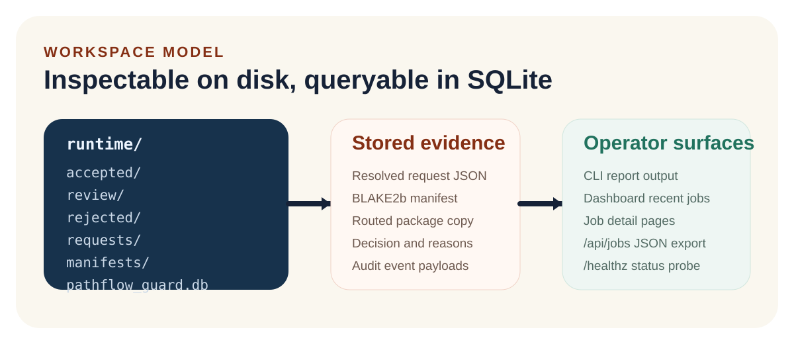

routing lanes: accept, review, reject
Operator And Technical Manual
Catch low-quality slide packages before they become downstream cost, noise, or risk.
PathFlow Guard is a workflow-support application for digital pathology intake. It
evaluates slide packages before cloud upload, extracts quality metrics from raster
tiles or OpenSlide-backed whole-slide images, assigns an accept,
review, or reject outcome, writes deterministic manifests,
and stores an audit trail that can be re-read later.
The shipping workflow today is Python-centered. The repository also includes a C++ QC core, a Rust integrity attestor, an Azure deployment skeleton, CI/CD, and regulated-development documentation.
CLI + Dashboard + JSON API
SQLite job history
OpenSlide runtime discovery
PyInstaller Windows EXE
Deterministic BLAKE2b manifests
top-level workspace outputs created during normal operation
request modes: direct metrics input or package-driven extraction
inspectable story: request, decision, manifest, audit, stored package
System overview
Quick Start
Two practical ways to run the product.
Use the source path while developing or validating changes. Use the packaged executable when you want the operator-facing Windows delivery.
Minimum runtime expectations
- Python 3.12 or newer for the source-installed orchestrator
- Windows 11 or another environment supported by your Python and OpenSlide toolchain
- OpenSlide native runtime for real whole-slide extraction outside the packaged Windows flow
Three commands worth learning first
pathflow-guard doctorreports runtime capabilitiespathflow-guard demoseeds sample jobs into a workspacepathflow-guard servestarts the local dashboard and API
cd python\orchestrator
python -m pip install --upgrade pip
python -m pip install -e ".[dev]"
pathflow-guard doctor
pathflow-guard init --workspace .\runtime
pathflow-guard demo --workspace .\runtime
pathflow-guard report --workspace .\runtime
pathflow-guard serve --workspace .\runtime --port 8765
Run from source
This is the normal developer path. If your Python Scripts directory is not on
PATH, use the module form:
python -m pathflow_guard.cli doctor.
cd python\orchestrator
.\build_windows.ps1
.\dist\PathFlowGuard.exe doctor
.\dist\PathFlowGuard.exe init --workspace .\runtime
.\dist\PathFlowGuard.exe demo --workspace .\runtime
.\dist\PathFlowGuard.exe serve --workspace .\runtime --port 8765
Run the packaged EXE
The build script installs dependencies, runs PyInstaller with
PathFlowGuard.spec, and produces dist\PathFlowGuard.exe.
Add -SmokeTest when you want a packaged-workflow validation.
Preferred operator sequence: run
doctor, initialize a workspace, seed
demo data or ingest a real request, then open the dashboard at
http://127.0.0.1:8765.
Workflow
The runtime is a stepwise evidence pipeline.
The workflow is intentionally small and inspectable. Each step either adds evidence to the request or records an output that can be revisited later.
Read request
Load a JSON payload into the strict request model and validate required string fields.
Resolve context
Resolve package_path relative to the request file and compute file bytes when absent.
Extract metrics
If focus, tissue, or artifact fields are missing, PathFlow Guard samples the package.
Evaluate policy
Threshold and compatibility checks generate reason codes and a deterministic routing decision.
Persist artifacts
Write the resolved request JSON, optional manifest, audit JSON, and SQLite rows.
Route payload
Copy the package into accepted/, review/, or rejected/.
Expose results
The same job can be viewed on disk, in SQLite, on the dashboard, or through the JSON API.
Escalate uncertainty
Borderline conditions are routed to manual review instead of being silently accepted.
Lifecycle of one request
Operator expectations
- Use JSON requests for repeatable intake and evidence preservation.
- Prefer
ingestwhen you want an auditable job, not just a dry evaluation. - Use
reportfor a quick workspace summary and recent job list. - Use
/jobs/<job_id>when reviewing one routed case in the browser.
accept -> upload lane
review -> manual hold
reject -> rescan path
Request Model
Requests are simple by design, but the runtime enriches them before evaluation.
PathFlow Guard accepts direct metric input, package-driven extraction, or a mix of both. Missing bytes and QC metrics can be resolved automatically when a package path is present.
{
"case_id": "CASE-2026-101",
"slide_id": "SLIDE-101",
"site_id": "SITE-EDGE-ALPHA",
"objective_power": 40,
"file_bytes": 0,
"package_path": "../packages/accept-package",
"notes": "Expected accept lane sample."
}
What happens to this sample
The sample request does not provide focus, tissue, or artifact metrics, so the pipeline resolves the package path, measures bytes from disk, extracts the missing metrics, and only then applies the rule engine.
| Field | Type | Required | Meaning | Runtime behavior |
|---|---|---|---|---|
| case_id | string | yes | Case identifier carried into job records and UI views | Empty values fail validation |
| slide_id | string | yes | Slide identifier used in audit and review screens | Empty values fail validation |
| site_id | string | yes | Edge location or originating site | Empty values fail validation |
| objective_power | integer | no | Scanner objective power | Defaults to 40; unsupported values cause review |
| file_bytes | integer | no | Declared package size | If zero and a package exists, the pipeline measures bytes from disk |
| focus_score | float | conditional | Sharpness-derived score | Must be present or extractable from image data |
| tissue_coverage | float | conditional | Fraction of tile pixels treated as tissue-bearing | Must be present or extractable from image data |
| artifact_ratio | float | conditional | Fraction of pixels flagged as likely artifact | Must be present or extractable from image data |
| package_path | string | no | File or directory containing tiles or a whole-slide image | Relative paths are resolved from the request JSON location |
| notes | string | no | Operator note persisted into the stored request and SQLite row | Defaults to empty string |
When the runtime changes the request
- Relative
package_pathvalues become absolute paths before use. file_bytesis computed from disk if the declared value is not usable.- Missing QC metrics trigger automatic extraction from the slide package.
- The resolved request is what gets written to
requests/.
Legacy CLI behavior
Passing a single existing file path to the CLI without a subcommand is treated as
a legacy evaluate invocation. Preferred usage is still explicit:
pathflow-guard evaluate request.json.
Decision Engine
Deterministic thresholds drive routing, and reason codes explain why.
The rule engine is conservative on purpose. It prefers auditable manual review over silent acceptance when important signals fall outside the expected range.
| Signal | Review trigger | Reject trigger | Current default behavior |
|---|---|---|---|
| focus_score | < 55.0 | < 35.0 | Borderline blur goes to review; severe blur rejects |
| tissue_coverage | < 0.10 | < 0.03 | Low tissue presence is escalated before upload |
| artifact_ratio | > 0.12 | > 0.25 | Artifact-heavy content is held or rejected |
| objective_power | not in (20, 40) | n/a | Unsupported objective powers route to review |
| file_bytes | > 5 GiB | <= 0 | Oversized packages route to review; invalid size rejects |
Decision precedence
Common reason codes
unsupported_objective_powerinvalid_file_sizefile_too_largefocus_below_review_thresholdfocus_below_reject_thresholdtissue_below_review_thresholdtissue_below_reject_thresholdartifact_above_review_thresholdartifact_above_reject_threshold
The current thresholds are heuristic first-version rules, not clinically validated
production algorithms. The design intent is inspectable workflow control, not autonomous diagnosis.
Imaging
PathFlow Guard handles raster tile folders and OpenSlide-backed whole-slide files.
Extraction is format-aware. The runtime first looks for a recognizable whole-slide image. If it finds one, it samples representative regions. Otherwise, it aggregates supported raster tiles from the package.
Tile folders or single image files
Supported raster extensions are .bmp, .gif,
.jpeg, .jpg, .pgm, .png,
.ppm, .tif, and .tiff. Large images are
reduced to a 256x256 working size before measurement.
Whole-slide file discovery
Known WSI formats include .svs, .ndpi,
.mrxs, .scn, .bif,
.svslide, .vms, and .vmu. The ambiguous
.tif and .tiff extensions are treated as whole-slide
candidates only when OpenSlide recognizes them.
What is actually measured
Focus comes from an average local Laplacian response, tissue coverage from a simple grayscale threshold, and artifact ratio from isolated brightness spikes and strong saturated color markers.
Whole-slide extraction flow
default maximum tile samples per extraction call
slide tile size used for representative region requests
grayscale cutoff used by the current tissue heuristic
local grayscale spike threshold used in artifact detection
On Windows, OpenSlide runtime discovery checks packaged runtime locations,
openslide_bin, and Conda-style Library\bin directories.
If OpenSlide cannot be loaded, whole-slide extraction fails and doctor
reports that limitation.
Interfaces
One engine, three operator surfaces: CLI, dashboard, and JSON API.
The CLI is the authoritative control surface. The dashboard and API are thin layers over the same repository and pipeline objects, which keeps behavior aligned.
Interface stack
CLI command reference
init --workspace PATH: create workspace directories and the SQLite databaseevaluate REQUEST.json: resolve context and return a decision without persisting a jobextract PACKAGE_PATH: print extracted metrics as JSONdoctor: show runtime and OpenSlide capabilitiesingest REQUEST.json --workspace PATH: evaluate, persist, audit, manifest, and routereport --workspace PATH --limit N: print counts and recent jobsserve --workspace PATH --host HOST --port PORT: start the local web serverdemo --workspace PATH: seed sample requests fromsamples/requests
| Surface | Path or command | Purpose | Notes |
|---|---|---|---|
| Dashboard | / |
Summary cards, recent jobs table, manual ingest form | Good for local operator review and smoke checks |
| Job detail | /jobs/<job_id> |
Human-readable view of one stored job | Shows request fields, reasons, and file paths |
| API list | /api/jobs |
JSON export of recent jobs | Backed directly by repository export |
| API detail | /api/jobs/<job_id> |
JSON for one job record | Useful for scripting and integration tests |
| Health probe | /healthz |
Simple status endpoint returning {"status":"ok"} |
Used in packaged smoke testing |
| Manual ingest | POST /ingest |
Form-based intake from the dashboard | Redirects to the created job detail page on success |
Workspace
Every ingest produces inspectable disk artifacts plus database state.
The default workspace root is runtime under the current working
directory. The layout is intentionally plain so operators can inspect it directly.
runtime\
accepted\
review\
rejected\
requests\
manifests\
audit\
pathflow_guard.db
What lives where
The workspace contains the routed package copies, the resolved request records, the generated content manifests, the per-job audit JSON, and the SQLite database used for reporting and the web UI.
Resolved request record
Stores the final request used by the rule engine, after path resolution, byte measurement, and optional metric extraction.
Deterministic package manifest
Each manifest records a generated timestamp, source path, total bytes, and a sorted list of file entries containing relative path, byte count, and BLAKE2b hash.
Event timeline
The audit JSON stores a list of events per job. Current event types are
metrics_extracted and job_ingested.
How one job maps onto storage
jobs table stores paths back to the request record,
manifest, and stored package. This creates a simple but useful traceability chain.
Database schema highlights
jobsstores request fields, decision, reasons JSON, and key output paths.audit_eventsstores event type plus a deterministic JSON payload.summarize()groups decision counts for dashboard and report views.export_jobs()returns serializable job records for the JSON API.
Package copy behavior depends on source type. Directories are copied with
copytree(); individual files are copied into a job-specific directory.
Build And Deployment
Local Windows delivery is implemented now; cloud continuation is scaffolded.
The repo is organized around a real executable application, with companion native modules and a forward path to Azure-hosted continuation for accepted jobs.
Current shipping runtime
Owns request loading, metric extraction dispatch, policy evaluation, manifest creation, audit persistence, dashboard rendering, and API endpoints.
Native metric path
Present as a reference implementation and future performance target for metric computation and benchmarking on edge hardware.
Integrity companion
Builds deterministic file manifests using BLAKE3 and provides a narrow place to harden integrity-sensitive behavior outside the Python runtime.
Deployment split
Windows build script details
build_windows.ps1accepts an optional-Pythonargument.- Without that argument it prefers
py -3.12, then falls back topython. - It upgrades
pip, installs.[dev], and runs PyInstaller. smoke_windows_release.ps1validates doctor, init, demo, report, serve, and extract on the packaged EXE.scripts\build_release.ps1assembles a full versioned release bundle with checksums and release notes.
Release posture
The repository is already set up for multi-language CI and a Windows release artifact flow. Tagged releases are intended to publish a versioned EXE, a versioned ZIP bundle, changelog-backed release notes, and checksums, with optional signing when secrets are configured.
Verification And Quality
Engineered like a disciplined medical-software project, while staying honest about scope.
PathFlow Guard is not a regulatory submission. It is a working implementation scaffold with real code, tests, design docs, and quality-system framing aligned to the domain.
- Python unit tests for CLI, imaging, manifest, pipeline, service, and web server behavior
- Ruff linting for the Python codebase
- C++ configure, build, and CTest execution for the QC core
- Rust format check, Clippy, and unit tests for the attestor
- Packaged Windows smoke testing against the EXE
- IEC 62304-style lifecycle decomposition
- ISO 13485-style design-control framing
- ISO 14971-style risk framing
- Traceability mapping from requirements to implementation and verification
- Architecture and security posture documented with the code
| Concern | Current answer in this repo | Residual gap | Reference |
|---|---|---|---|
| Lifecycle control | Implementation, verification, and docs are kept together | Formal release records and role assignments can be expanded | software-lifecycle.md |
| Design controls | Inputs, outputs, reviews, and changes are explicitly framed | Additional review templates could be added | design-controls.md |
| Risk management | False accepts, false rejects, tampering, and PHI risks are identified | Needs broader validation against real-world cohorts | risk-register.md |
| Traceability | Requirements are mapped to code and verification | Should evolve as the rule engine grows | traceability-matrix.md |
| Security posture | PHI minimization intent, manifests, least privilege, CI review gates | Would benefit from deeper dependency and deployment hardening | architecture.md |

Troubleshooting
The problems you are most likely to hit first.
Most startup failures come from environment setup, missing OpenSlide runtime support, or incorrect request paths rather than logic defects in the pipeline itself.
pathflow-guard is not recognized
Add your Python Scripts directory to PATH, or run the CLI with
python -m pathflow_guard.cli. The installed console script lives in
the interpreter's Scripts directory.
doctor reports OpenSlide unavailable
Install openslide-python and the native runtime. On Windows the
packaged app bundles this path more predictably than a loose source environment.
Package path does not resolve
Relative package_path values are resolved from the request JSON
location, not from the process working directory. Check the path from the request
file's directory, not from wherever you launched the CLI.
Metrics are required unless extractable
If you omit focus_score, tissue_coverage, and
artifact_ratio, you must provide a valid package path containing a
supported raster image or recognized slide file.
Unexpected review result
Check the reason codes first. Unsupported objective power or oversized file size cause review even when the image metrics themselves look acceptable.
Need to prove what happened for one job
Pull the job detail page or the JSON API record, then inspect the linked files in
requests/, manifests/, and audit/.
pathflow-guard doctor
pathflow-guard extract .\samples\packages\accept-package
pathflow-guard evaluate .\samples\requests\accept.json
pathflow-guard ingest .\samples\requests\accept.json --workspace .\runtime
pathflow-guard report --workspace .\runtime
Reference
Useful project documents and operating reminders.
This HTML manual is meant to stand on its own, but these repo documents remain the primary source for adjacent process and architecture detail.
Core references
Scope reminders
- PathFlow Guard is workflow-support software, not autonomous diagnosis.
- The Python orchestrator is the current end-to-end executable path.
- The C++ and Rust components are companion modules and verification targets.
- The current QC rules are heuristic and should not be described as clinically validated.
- The Azure portion is scaffolding, not a completed production cloud service.
